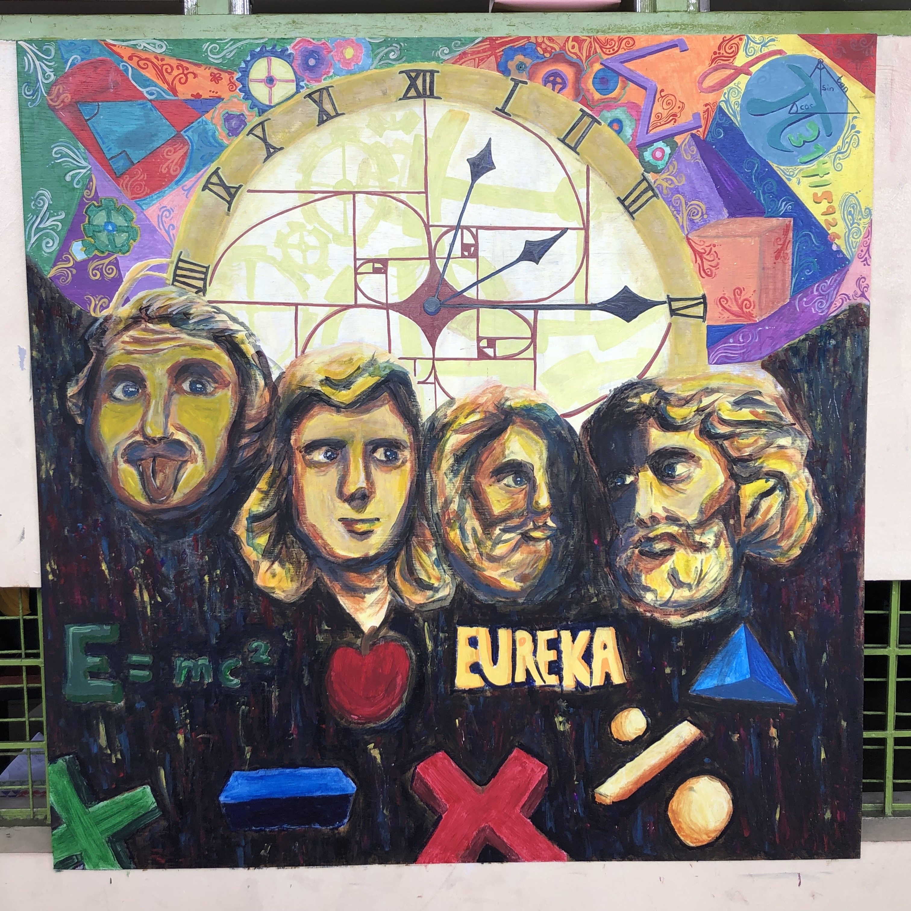
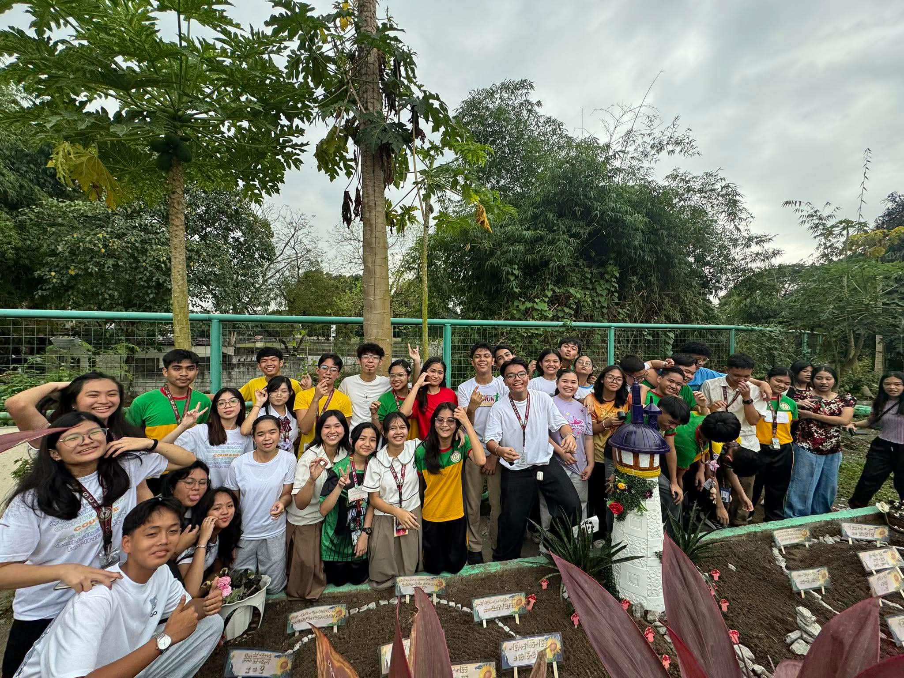
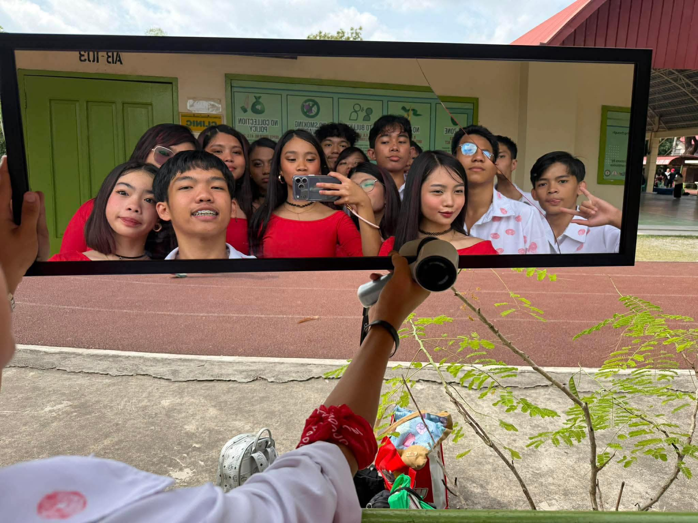
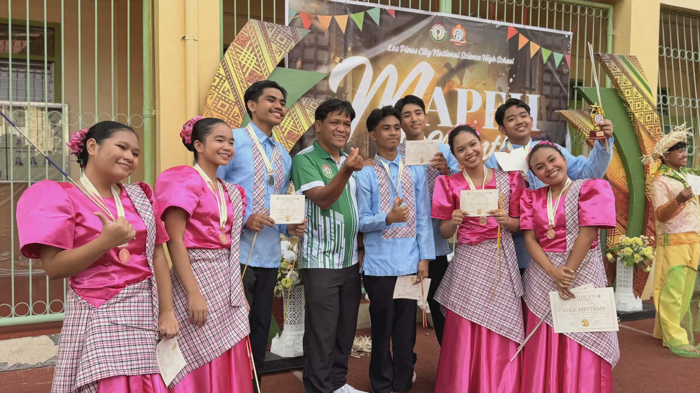
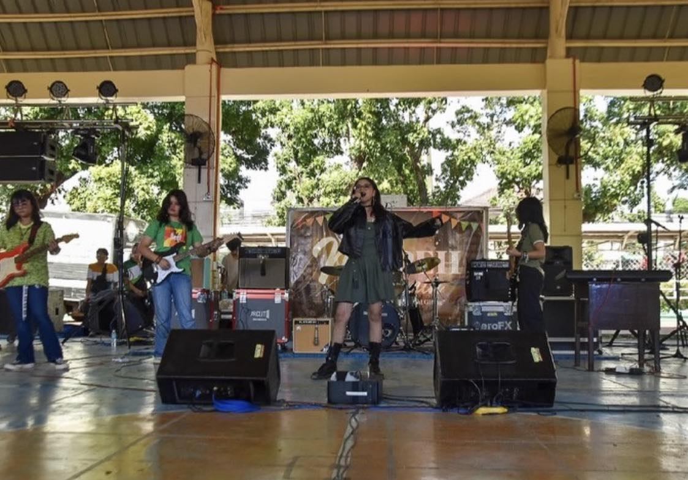
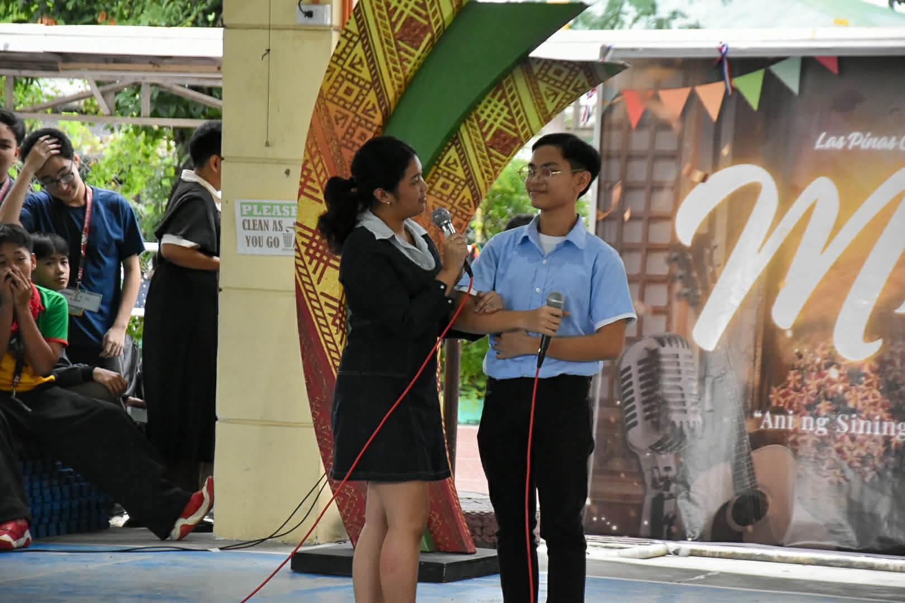

3rd Quarter
Math Mural
Seeing the math mural made me realize that math can also be creative and artistic. Even though I didn’t help make it, I appreciated the effort and teamwork that my classmates put into it. It was interesting to see how mathematical ideas could be shown through art.

Math Garden
Seeing the Math Garden was interesting for me even though I wasn’t part of making it. I liked how math concepts were displayed creatively around the area. It showed me that math can be fun and can be seen in different ways outside the classroom.

V-Pop
Being part of the V-Pop performance was a fun and meaningful experience for me. It was exciting to perform and show important values through music and presentation. Through this activity, I learned the importance of teamwork, confidence, and expressing positive values.
4th Quarter
Street Dance
Joining the street dance competition was a memorable experience for me. It was challenging because of the practices, but it was also fun and exciting. I learned the importance of teamwork, hard work, and confidence while performing with my group.

Folk Dance
Watching the folk dance performance was a great experience for me. I enjoyed seeing the colorful costumes and the traditional movements of the dancers. It made me appreciate our culture more and understand how dances can show the history and traditions of our country.

Battle of the Bands
Watching the Battle of the Bands was a very exciting experience for me. I enjoyed listening to the different bands and seeing their talent and confidence. It was fun to watch and it made me appreciate music and the hard work the performers put into their performances.

OPM Duet
Watching the OPM duet performance was a great experience for me. I enjoyed listening to the beautiful and emotional songs. It helped me appreciate Filipino music and culture more, and I admired the performers for their talent and confidence.

Noli Me Tangere
Joining the Noli Me Tangere play as both a props team member and an actor was a meaningful experience for me. It was challenging to balance preparing the props and performing on stage, but it was also very fun and memorable. Through this experience, I learned the importance of teamwork, responsibility, and confidence while bringing the story to life.
Click the thumbnail to play.